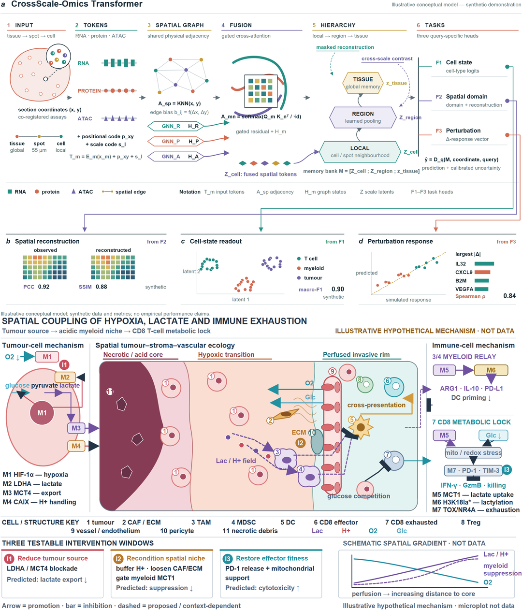
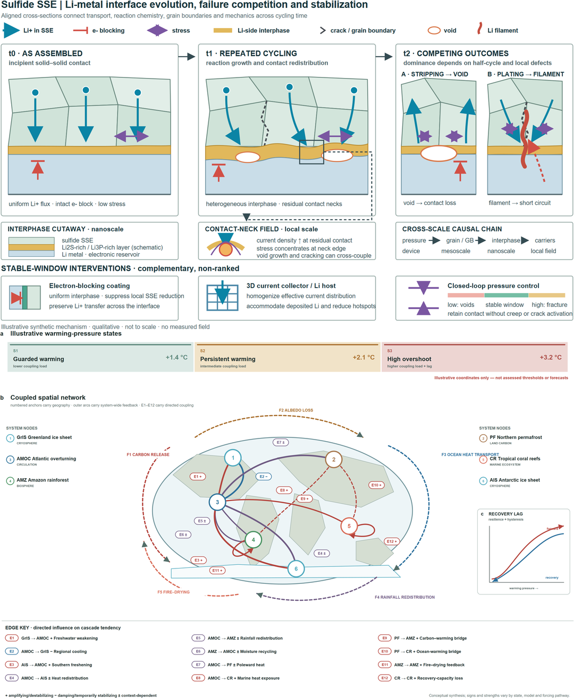
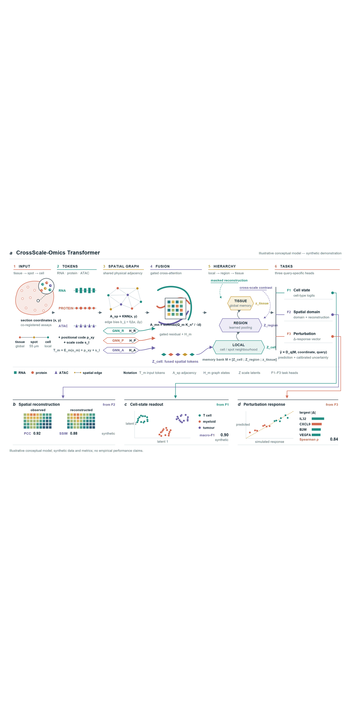
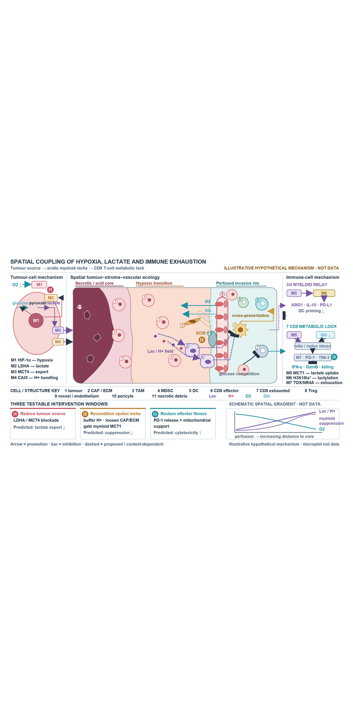
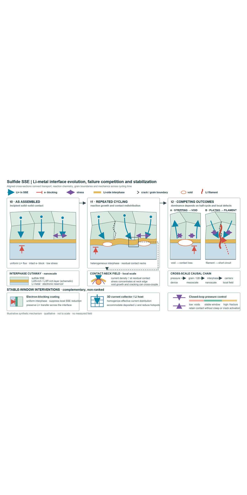
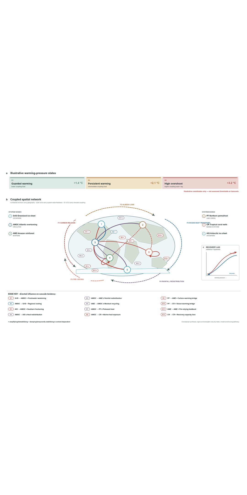
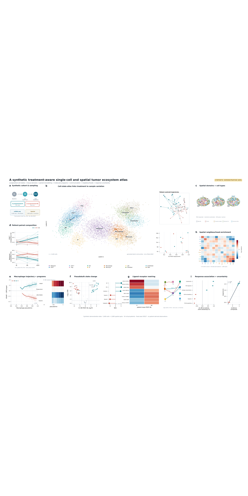
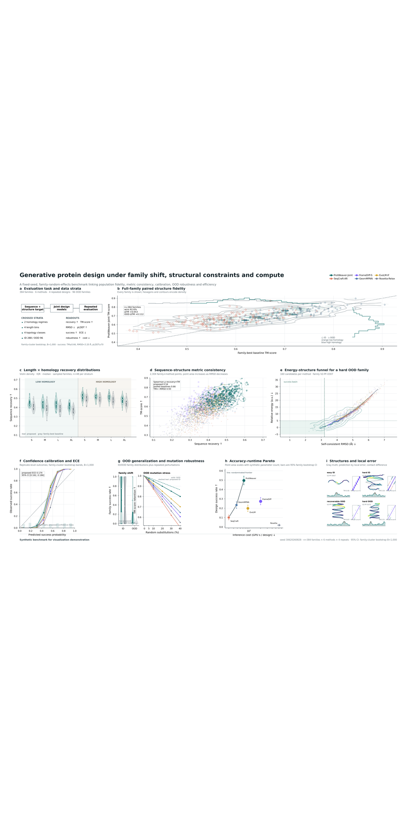
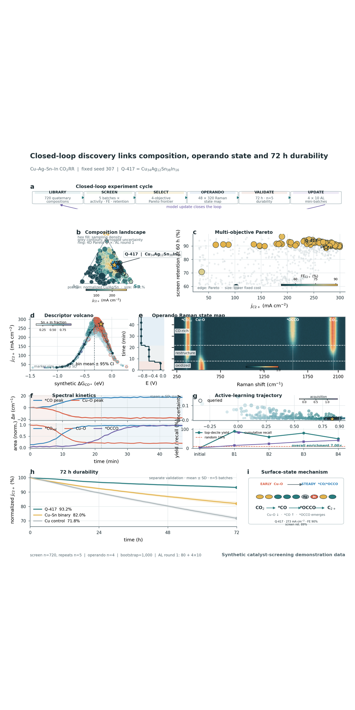
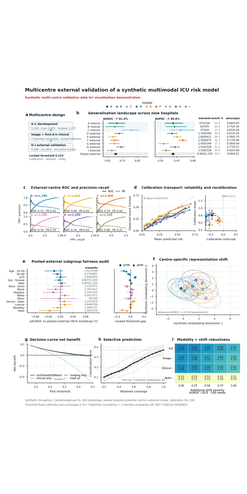

FIGURE STUDIES / 301–308
Eight PaperSpine5 figures,
ready for the product website.
Four schematics and four data figures across spatial omics, tumour immunometabolism, solid-state batteries, Earth systems, single-cell atlases, protein design, operando catalysis, and multicentre medical AI. The public version shows PaperSpine5 outputs only, with no corresponding reference figures.
01 / FOUR OUTPUT-ONLY 1:2 WALLS
Four PaperSpine5-only mobile walls
Two full-width figures per page on pure white, with no title cards, frames, DOI text, reference figures, or cropping.




02 / EIGHT OUTPUT-ONLY DETAIL PAGES
Eight full-width single-figure pages
Each page contains one complete PaperSpine5 figure at its original aspect ratio, sized for full-width phone reading.








03 / PUBLICATION DOWNLOADS
All eight figures in one vector PDF
The eight-page file places one figure on each page by concatenating the final vector PDFs directly. It contains no rasterized screenshots, cover page, reference figure, or explanatory card. Publication PNG and editable SVG originals are retained in the same package.